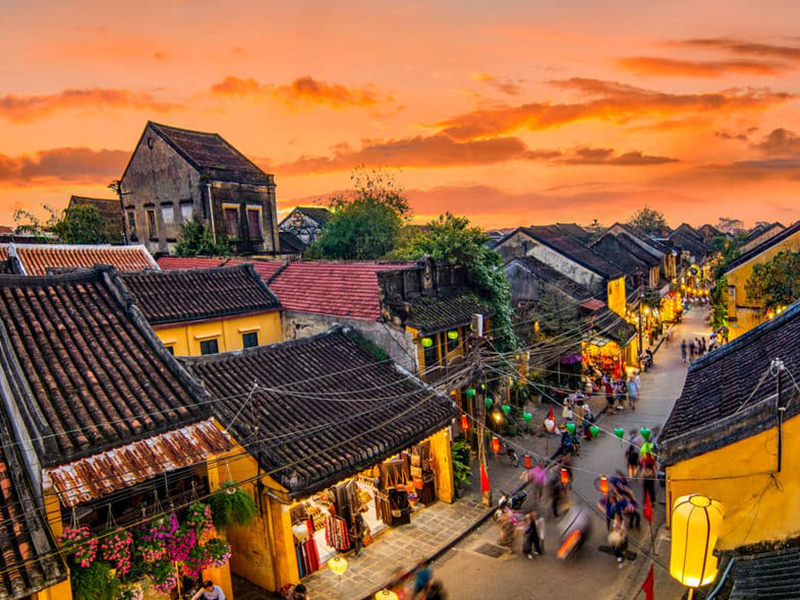
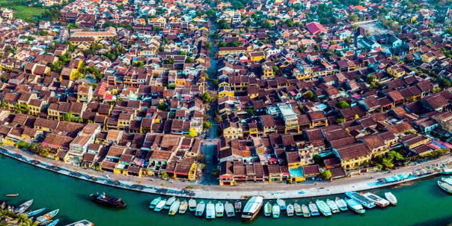
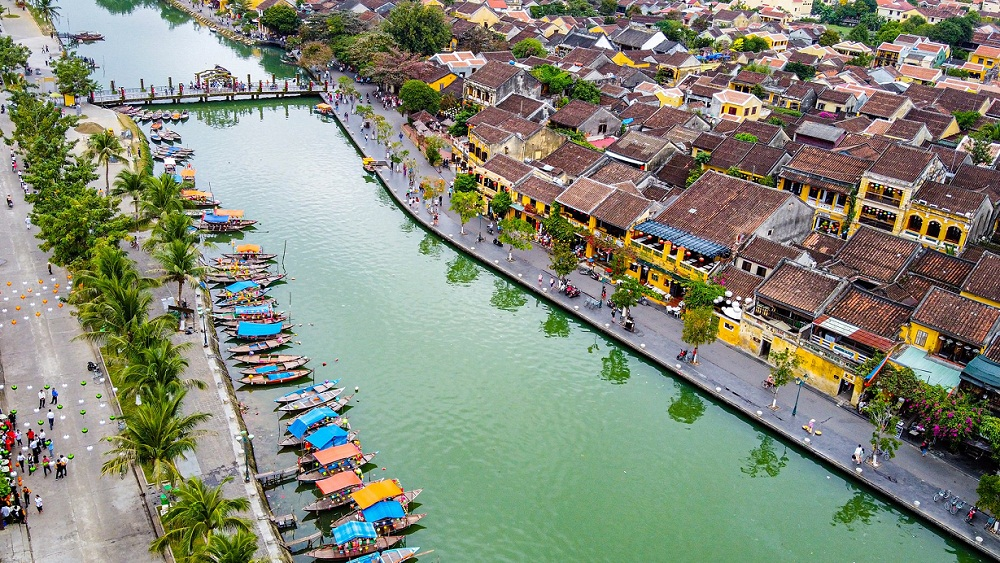
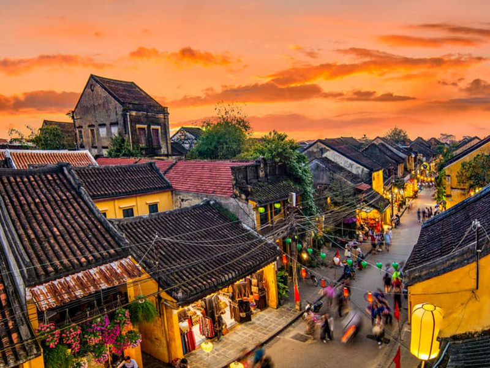
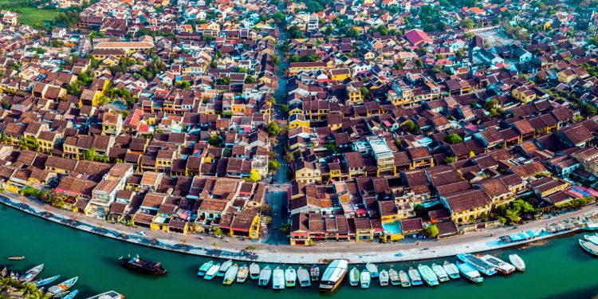
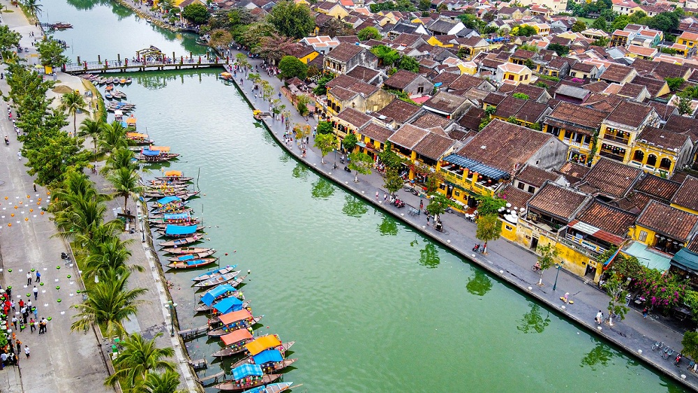

Văn hóa/Lịch sử
Ẩm thực: Có thể nói, ẩm thực Quảng Nam là một trong những nét văn hóa đa dạng nhất tại Việt Nam hiện nay. Ẩm thực nơi đây là sự kết hợp hương vị độc đáo từ vùng núi và biển, tạo nên một sự đa dạng và phong phú với các đặc sản có thể kể đến như: Cao lầu, bánh đập, chả cá, mì quảng, …
Công trình, kiến trúc: Qua bao thăng trầm biến cổ, Quảng Nam vẫn lưu giữ được những tài nguyên văn hóa vô cùng độc đáo, có giá trị nhân văn sâu sắc, có thể kể đến là 2 di sản văn hoá thế giới: Phố cổ Hội An và thánh địa Mỹ Sơn. Ngoài ra, ở Quảng Nam còn có các công trình tiêu biểu khác như: Kinh đô cổ Trà Kiệu, các tháp chàm Khương Mỹ, Chiên Đàn, Bàng An, Phật viện Đồng Dương. Kiến trúc Quảng Nam không chỉ ấn tượng mà còn ghi lại dấu ấn rực rỡ của nền văn hóa Sa Huỳnh, Champa, Đại Việt.
Văn hóa Quảng Nam có một nền văn hóa đa dạng và phong phú, với ảnh hưởng của nhiều nền văn hóa khác nhau qua các thời kỳ lịch sử, tiêu biểu nhất là nền văn hóa Chăm Cổ. Có thể nói, văn hóa nơi đây mang trong mình sự đa dạng, phong phú và đậm chất truyền thống, đóng góp vào bức tranh văn hóa đa sắc màu của cả nước Việt Nam.
 




